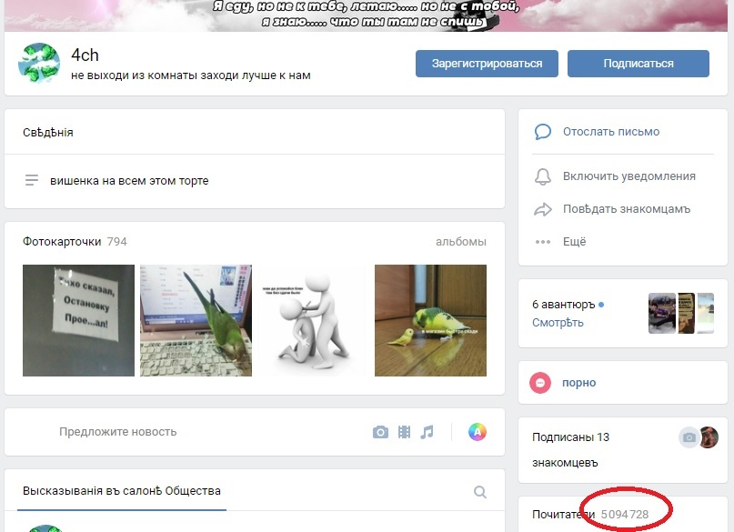
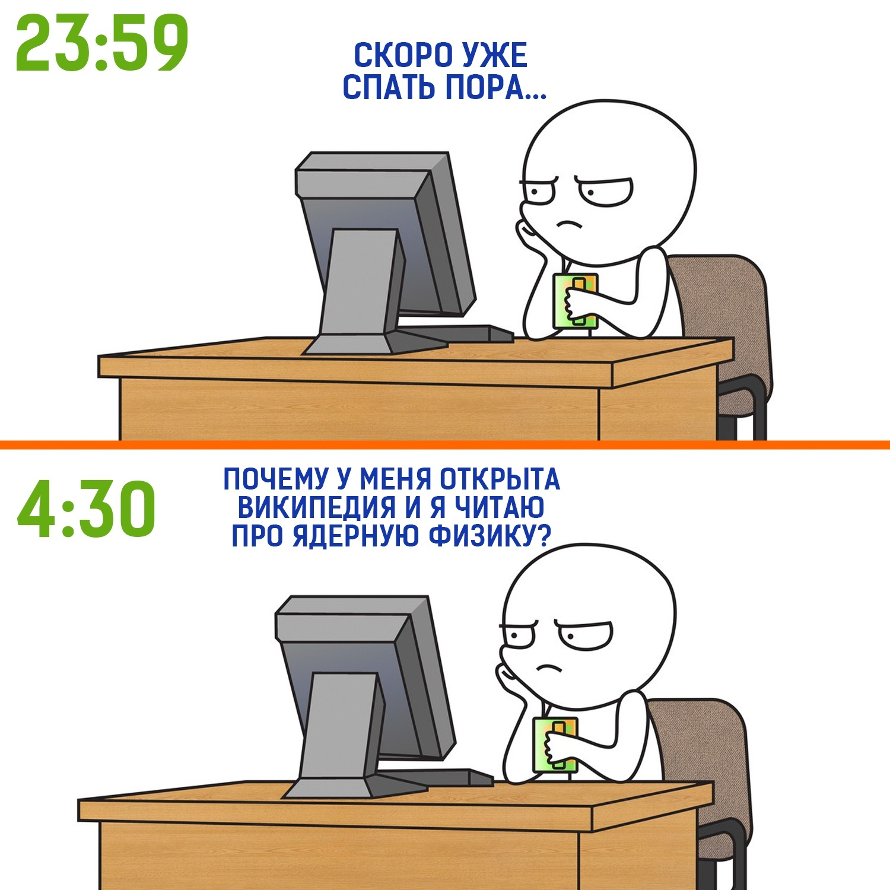
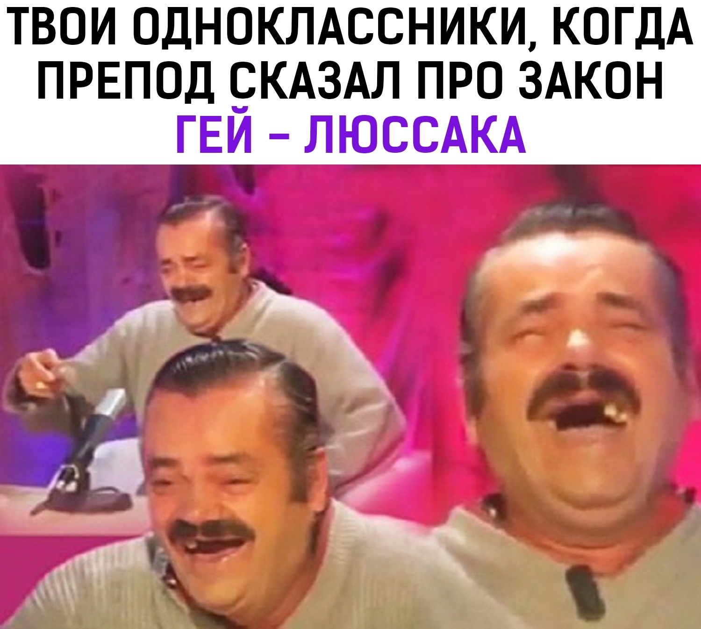
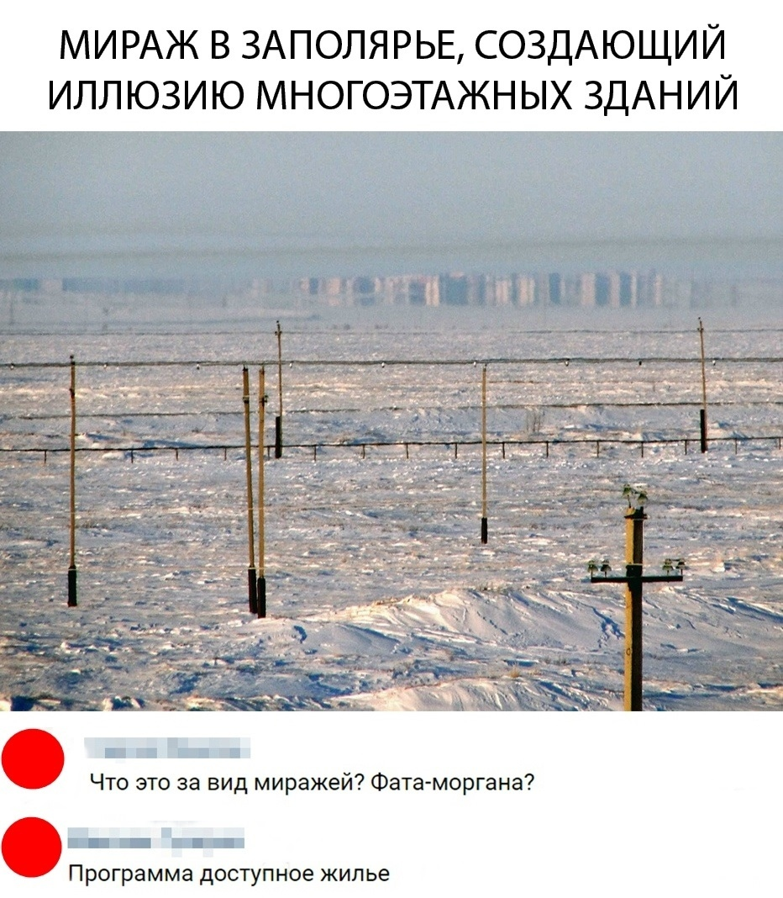

Раковые мемы
Полисемантический термин.Первое значение
Да-да, это - именно то, что тебе скидывают твои любимые одноклассники, друзья, коллеги или, прости господи, родственники. Эти мемы - самые простые для понимания мемы в принципе. Чтобы создать такой - много ума не надо - достаточно придумать тупую шутку, написать этот текст на картинке и наслаждаться своей гениальностью. Иронично, но поскольку этот класс мемов - самый простой, он пользуется пользуется наибольшим спросом и гораздо более популярен нынче, нежели другие представители данного культурного явления.Второе значение
По сути - переходное состояние мема между обычным мемом и баяном.Где ознакомиться
Таким контентом забито большинство популярных пабликов в том же Вконтакте - 4ch; mdk; щебестан; овсянка, сэр.  Раковая опухоль интернета.Найти такие мемы не составит вам никакого труда.   